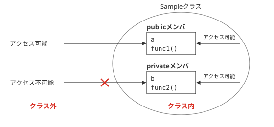
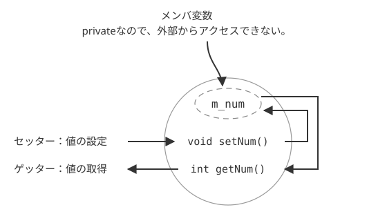

アクセス指定子
アクセス指定子の種類
前回は、C++言語におけるクラスの定義方法について学習しました。ここで、メンバ変数やメンバ関数の宣言部分に、publicやprivateというキーワードを使いましたが、これらのキーワードについての説明は省略しました。
これらは、アクセス指定子と言い、メンバ変数やメンバ関数にアクセスできる範囲を指定することが出来ます。C++言語のアクセス指定子には、以下のようなものがあります。
| アクセス指定子 | 意味 |
|---|---|
| public | すべての範囲から呼び出し・読み出し可能 |
| private | 同一クラスまたは同一インスタンス内でのみアクセス可能 |
| protected | 同一クラスまたは同一インスタンスおよび、サブクラスおよびそのインスタンス内でのみアクセス可能（6日目参照） |
アクセス指定子の有効範囲
では実際に、あらためてアクセス指定子の働きを見てみましょう。ここでは、privateおよび、public修飾子の働きを見てみます。protectedについては、継承（6日目）の概念の理解が必要なので、ここでは省略します。
#ifndef SAMPLE_H
#define SAMPLE_H
class Sample{
public:
int a; // publicなメンバ変数
private:
int b; // privateなメンバ変数
public:
void func1();
private:
void func2();
};
#endif // SAMPLE_H
#include "Sample.h"
#include <iostream>
using namespace std;
void Sample::func1(){
cout << "func1" << endl;
a = 1;
b = 1;
func2(); // func2ないから、func1を呼び出す
}
void Sample::func2(){
a = 2;
b = 2;
cout << "a=" << a << "," << "b=" << b << endl;
}
#include "Sample.h"
#include <iostream>
using namespace std;
int main(){
Sample s;
s.a = 1;
//s.b = 2;
s.func1();
//s.func2();
}
a=2,b=2
main.cppを見てもわかる通り、publicなメンバ変数、およびメンバ関数である、a、func1()は、クラスの外部であるmain.cppからアクセスすることが可能です。しかし、main.cppの9行目、および、11行目のコメントをとってみてください。ビルドエラーが出るはずです。
Sample.cppの中で、これらにアクセスしているにもかかわらず、main.cppからはできないのです。このように、private修飾子がついているメンバ変数、およびメンバ関数は、クラスの外からアクセスできません。(図3-1.参照)

図3-1：publicメンバとprivateメンバ
カプセル化
カプセル化とアクセスメソッド
メンバへのアクセスを、そのクラスのメンバ関数からだけしかできないように制限することをカプセル化（隠蔽）と言います。C++言語に限らず、オブジェクト指向言語ではよく使われる手法です。
前述の通り、private指定子を使えば実現可能です。C++言語では普通、メンバ変数は一部の例外を除き、カプセル化して隠蔽することが一般的です。しかし、それでは外からそのメンバ変数へアクセスすることが出来ません。そこで、そのメンバ変数の値を設定したり、取得したりするメンバ関数が必要になってきます。それを、アクセスメソッドなどと呼びます。
では実際に、以下のソースコードで、実例で説明していきます。
class Sample
{
public:
void setNum(int num); // private指定されたメンバ変数に書き込む
int getNum(); // private指定されたメンバ変数を読み取る
private:
int m_num;
};
#include "sample.h"
void Sample::setNum(int num)
{
m_num = num;
}
int Sample::getNum()
{
return m_num;
}
#include <iostream>
#include "sample.h"
using namespace std;
int main(){
Sample s;
s.setNum(5);
cout << s.getNum() << endl;
return 0;
}
セッターとゲッター
クラスで、private指定されたメンバ変数m_numに、値を書き込むときにはsetNum()メンバ関数、読み取るときにはgetNum()メンバ関数を使っています。これで、読み書きともに行えますが、片方だけにしてしまえば、「読み取り専用」とか「書き込み専用」とかいった特殊なメンバ変数も作れます。これもアクセス指定子を使うことが可能にした大きな特徴の１つです。
一般に、メンバ変数に書き込みを行うメンバ関数は、セッター、読み込みを行うメンバ関数を、ゲッターと言います。また、それぞれの名前は、書き込み・読み込みを行う変数名に由来しています。（図3-2）

図3-2：セッターとゲッター
stringクラス再び
stringクラスのメソッド
すでに紹介した、stringクラスについて説明していくことにします。stringクラスもまた、ユーザ定義クラス同様、クラスの一つなので、メンバ変数、および、メンバ関数が存在します。しかし、メンバ変数は一般的にカプセル化によって隠ぺいされているので、ユーザーは利用できません。
そこで、ここでは、stringクラスの主要なメンバ関数とその使い方を紹介していきます。まずは、以下のプログラムを実行してみてください。
#include <iostream>
#include <string>
using namespace std;
int main(){
string s;
s = "This is a"; // 最初の文字列
s.append(" pen."); // 文字列の追加
cout << s << endl;
cout << "文字列の長さ：" << s.length() << endl;
// printfで表示
printf("char*:%s\n",s.c_str());
return 0;
}
文字列の長さ：14
char*:This is a pen.
このプログラムでは、stringクラスの3つのメソッドが利用されています。1つ目が、append()で、文字列の後に更に文字列を追加できます。次が、length()で、文字列の長さを取得できます。
最後に出てくるc_str()で、これは少し変わっています。このサンプルの13行目で使われていますが、このメソッドで、文字列をC言語の形式（const char型）に変更しています。通常、C言語のchar*型と、stringクラスの間に互換性はありませんが、このメソッドを利用すれば、stringの文字列をchar型の配列に変換することが可能です。
string型には、このほかにもたくさんの便利なメソッドが存在しますが、ここでは以上にとどめておきます。